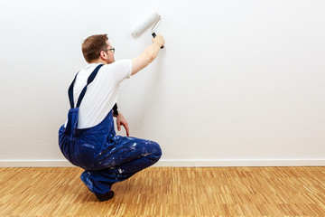
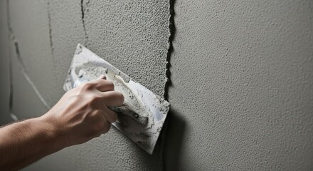

Frische Wände, geschützte Fassaden – sauber gemacht.
Vom Innenanstrich über die Fassadensanierung bis zur Lackierung von Fenstern und Geländern. Termintreu, mit abgedeckten Möbeln und besenreiner Übergabe.
Was wir für Sie übernehmen
Von einzelnen Räumen bis zum kompletten Mehrfamilienhaus – wir beraten Sie ehrlich, welche Lösung zu Ihrem Projekt passt.
Zahlen, auf die Sie sich verlassen können
Seit 2005 in Mannheim – mit festem Team, sauberer Arbeitsweise und Terminen, die halten.
Ergebnisse aus Mannheim und Umgebung
Ein Auszug realer Aufträge – Innenräume, Fassaden, Lack und Boden. Eine vollständige Vorher/Nachher-Mappe zeigen wir Ihnen gern beim Besichtigungstermin.

So läuft Ihr Projekt ab
- 01
Besichtigung & Beratung
Wir sehen uns alles vor Ort an, klären Farben und Umfang – und erstellen ein verbindliches Festpreisangebot.
- 02
Vorbereitung & Schutz
Möbel und Böden abdecken, Türen mit Staubschutz, Untergrund spachteln, schleifen, grundieren.
- 03
Saubere Ausführung
Anstrich, Lack oder Beschichtung – sauber abgesetzt an allen Kanten, termintreu umgesetzt.
- 04
Endreinigung & Übergabe
Wir räumen Abdeckungen ab, reinigen besenrein und übergeben Ihnen den fertigen Raum.
Ein Familienbetrieb aus Mannheim, seit 2005
Malerbetrieb Wagner wurde 2005 von Thomas Wagner gegründet. Heute sind wir ein eingespieltes Team aus Malern und Lackierern, das den Großraum Mannheim kennt – und weiß, worauf es ankommt: saubere Arbeit, eingehaltene Termine und ein Ergebnis, das hält.
Saubere Arbeitsweise
Abdeckung, Staubschutz und Endreinigung gehören zum Standard – nicht zum Aufpreis.
Feste Ansprechpartner
Kein wechselndes Subunternehmer-Karussell. Sie wissen, wer bei Ihnen arbeitet.
Termintreue
Zugesagte Termine halten wir – darauf bauen Mieterwechsel und Bauabläufe auf.
Geprüfte Qualität
Meisterbetrieb, Innungsmitglied, zertifizierte Farbsysteme von Caparol.
Echte Stimmen aus echten Projekten
„Die Wohnung war vor dem Einzug pünktlich frisch gestrichen, die Möbel sauber abgedeckt und am Ende war alles ordentlich geputzt. Genau so soll es laufen.“
„Unsere Fassade hatte Risse und Algen. Das Team hat erklärt, welche Farbe für unseren Altbau sinnvoll ist, und das Gerüst gleich mitorganisiert. Nach drei Jahren sieht alles noch top aus.“
„Als Hausverwaltung schätzen wir, dass Termine eingehalten werden. Die Treppenhäuser wurden ohne Beschwerden der Mieter renoviert – sauber und zügig.“

Wir suchen Verstärkung – vielleicht Sie?
Wir wachsen und suchen Kolleginnen und Kollegen, die saubere Arbeit ernst nehmen. Bei uns arbeiten Sie in einem festen Team, mit geregelten Arbeitszeiten, modernem Werkzeug und guter Ausrüstung.
- Maler und Lackierer (m/w/d) – Gesellen mit Erfahrung in Innen- und Fassadenarbeiten
- Stuckateure (m/w/d) für Putz- und Spachtelarbeiten
- Auszubildende (m/w/d) zum Maler und Lackierer – Start jedes Jahr im Sommer
Senden Sie uns kurz, was Sie können und wann Sie starten könnten. Wir melden uns innerhalb weniger Tage – ein Probearbeitstag ist jederzeit möglich.
Antworten, bevor Sie fragen
Wie lange dauert das Streichen einer 3-Zimmer-Wohnung?
Eine leere 3-Zimmer-Wohnung streichen wir je nach Zustand der Wände meist in 2 bis 4 Arbeitstagen, inklusive Vorbereitung und Endreinigung. Bei umfangreicheren Spachtelarbeiten kann es länger dauern – wir nennen Ihnen den Zeitrahmen vorab im Angebot.
Was kostet ein Anstrich?
Die Kosten hängen von Fläche, Untergrund und Aufwand der Vorbereitung ab. Deshalb besichtigen wir vorab kostenlos und erstellen ein verbindliches Festpreisangebot – ohne Überraschungen auf der Rechnung.
Muss ich die Möbel selbst ausräumen?
Nicht zwingend. Kleinere Möbel rücken wir zusammen und decken sie sicher ab. Bei einer Komplettrenovierung ist ein möglichst leerer Raum von Vorteil – wir besprechen das beim Termin.
Riecht die Farbe stark und wie lange?
Wir verwenden überwiegend emissions- und geruchsarme Farben. Der leichte Geruch verfliegt meist innerhalb eines Tages. Bei Büros und Praxen arbeiten wir auf Wunsch außerhalb der Öffnungszeiten.
Wie lange muss die Farbe trocknen, bis ich den Raum nutzen kann?
Wandfarbe ist meist nach wenigen Stunden oberflächentrocken und am Folgetag voll nutzbar. Bei Bodenbeschichtungen gelten längere Zeiten: begehbar in der Regel nach etwa 24 Stunden, voll belastbar nach mehreren Tagen.
Bleibt am Ende alles sauber?
Ja. Saubere Arbeit ist uns wichtig: Wir decken Möbel und Böden ab, schützen Türen mit Staubschutz und reinigen den Raum am Ende besenrein. Sie ziehen in einen sauberen Raum ein.
Welche Zahlungsarten bieten Sie an?
Sie zahlen bequem per Überweisung nach Rechnungsstellung. Bei größeren Projekten vereinbaren wir gerne Teilzahlungen nach Baufortschritt. Details halten wir im Angebot fest.
Ein Anruf. Ein Termin. Ein Festpreis.
Lassen Sie uns kostenlos und unverbindlich besichtigen. Sie bekommen ein verständliches Festpreisangebot – und einen sauberen Ablauf vom ersten Tag an.
Jetzt kostenlos besichtigen lassen Kurzfristiger Bedarf? ☎ 0621 1234567